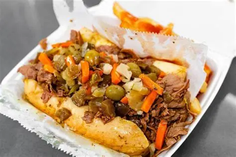
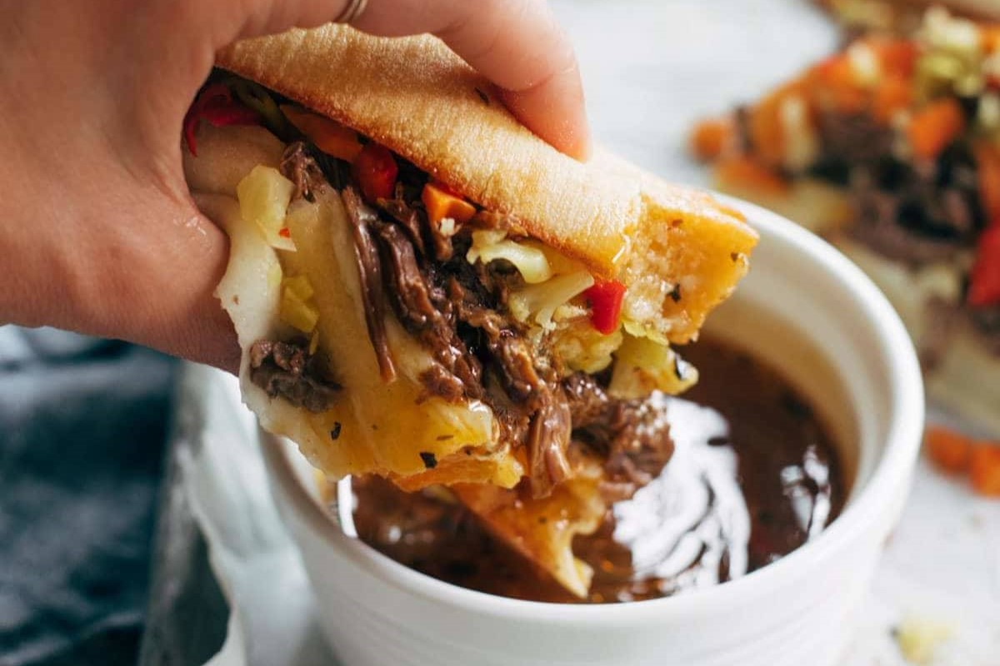
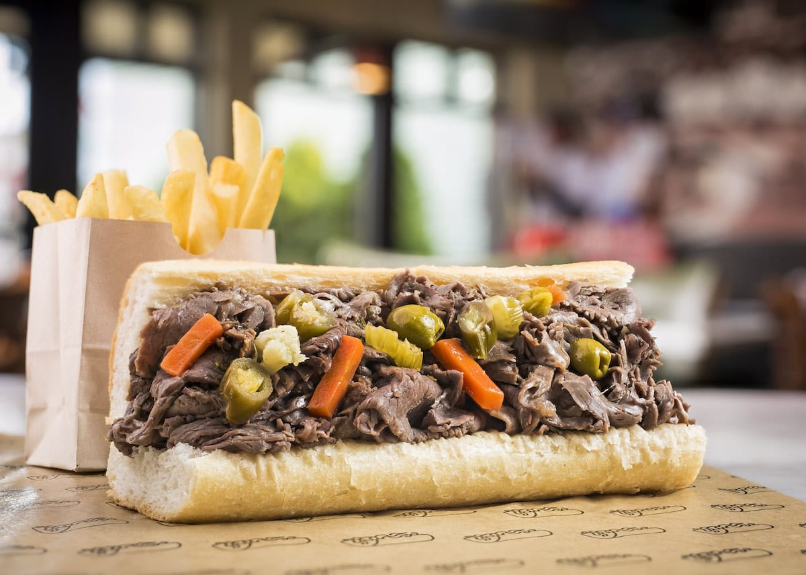
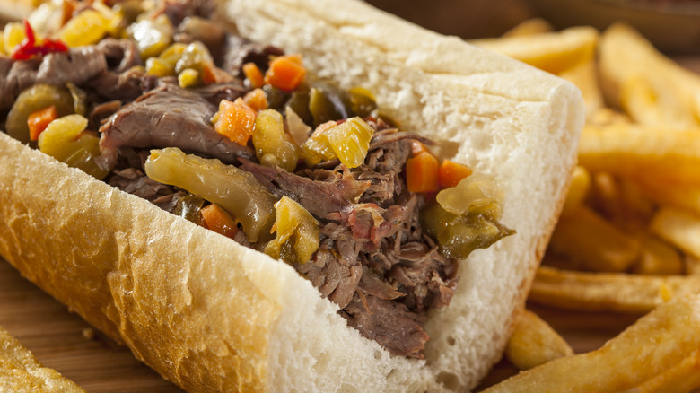

Ordering an Itaian Beef in Chicago isn't just about the meat-it's about the juice. The choice between "wet" and "dry" defines the entire eating experience, from texture to flavor intensity. Locals have strong opinions, and there's no wrong answer-just different levels of delicious mess.
| Feature | Wet Beef | Dry Beef |
|---|---|---|
| Juiciness | Fully dipped or soaked in au jus | Minimal juice, bread stays firm |
| Texture | Soft, messy, sometimes falling apart | Structured, easier to hanndle |
| Flavor Intensity | Deep,rich, fully saturatedMore balanced, less overwhelming | >|
| Eating Style | Two hands, lots of napkins | Cleaner, more controlled bites |
| Best For | Authentic,indulgent experience | On-the-go or first-timers |
A "wet" Itanlian beed is dipped into the hot au jus after being assembled,socaking the bread in savoru jucies. Some go even futher and order in "dipped", where the entire sandwhich is submerged quickly before serving.


A "dry" Italian Beef skips the dunk, allowing the bread to maintain its structure. The beef is still juicy on its own, but the sandwhich is far easier to eat-no dripping required.

